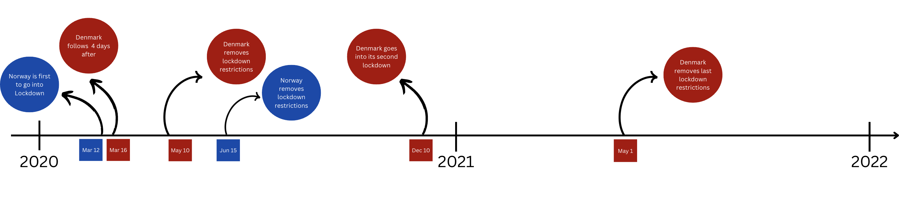

Sweden's COVID-19 approach, a success or a failure?
Author: Karl Fredrik Hu Josefsson
Email: kfhujosefsson@dons.usfca.edu
When the COVID-19 pandemic struck, countries around the world scrambled to implement policies to slow the spread of the virus—lockdowns, mask mandates, and social distancing became the new normal. In Scandinavia, three neighboring countries—Sweden, Norway, and Denmark—share similar cultures, economies, healthcare systems, and demographics. But when the crisis hit, one of them made a very different choice. Looking at the lockdown time line below, you can see that there wasn't any lockdowns in Sweden, while Norway and Denmark implemented strict lockdowns. The question is, was this a success or a failure?

Now that we are familiar with the context, let's start looking at some COVID-19 data. As the pandemic started to take its flight during the spring of 2020, the number of confirmed COVID-19 cases started to rapidly increase. Looking at the heatmap below, the spring of 2020 all the way through half of 2021 shows a very big difference in regards to the countries response. During this period, you can clearly see a large contrast seeing Sweden blowing up in confirmed cases while its neighboring countries are in lockdown.
COVID Cases in Scandinavia Over Time
With a sudden new disease, a lot of problem in healthcare can arise. Below we can see a chart of the respective hospital occupancy. Here you can see that the trend among the three are pretty similar. However, looking at the combined graph we can see how Sweden's hospital occupancy is much higher than the other two countries. This could be due to the fact that Sweden didn't have any lockdowns, and therefore a lot of people were infected at the same time.
Moving onto some Social & Economical Metrics, we have two graphs showing annual GDP and unemployment rate. Here we can see Sweden seeing the biggest fall in terms of GDP as well as a big rise in unemployment.
Lastly and most importantly, here is an animation of deaths per 10 million as we move through the pandemic. Comparing the three lines shows that Sweden had a early rise while the Denmark and Norway's numbers are low, which align well with the peridods of Sweden not putting in restrictions which is what the other countries did to stay afloat.